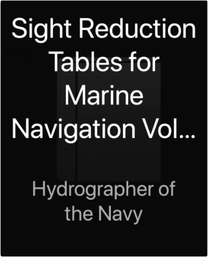
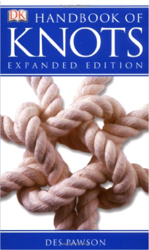

 Sight Reduction Tables for Marine Navigation Volume I [1] Lattitudes 0 - 15, Inclusive. NP 401[2]Hydrographer of the Navy  B00474QPRM  B00474QPRM  B00474QPRM  Handbook of KnotsDes Pawson Whether you want to learn some loops or practise plaits, this guide reveals everything you need to know about knot tying. With clear instructions and step-by-step photographs, you can be sure that you will select the correct type of rope. From fishing to camping, sailing to mountaineering, this handy guide will show you which knot to use. |

Doddridge Library
Collection Total:
417 Items
417 Items
Last Updated:
Apr 21, 2020
Apr 21, 2020

 Made with Delicious Library
Made with Delicious Library